AI & Machine Learning
Advancing Capabilities through Intelligent Algorithms
Designing, training, and deploying deep neural networks and machine learning models for complex prediction and automation tasks.
Diversified Applications

End-to-End AI Ecosystems
Comprehensive machine learning workflows from data ingestion and model training to robust deployment and continuous evaluation.
Computer Vision & Sensing
Automated Landmark Detection
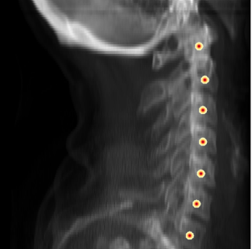
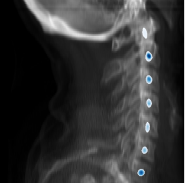
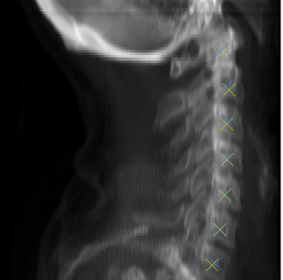
Anatomical Recognition
High-precision extraction of structural coordinates from complex radiographic scans.
Medical Images Auto-Segmentation
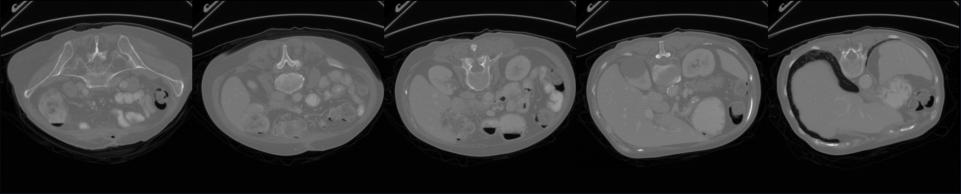
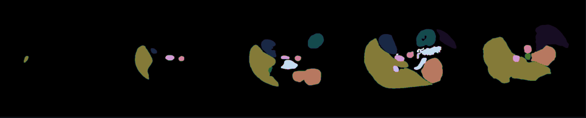
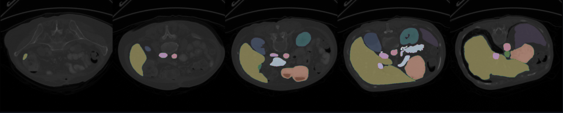
Volumetric Separation
Accurate partitioning of anatomical regions to assist in automated diagnostic procedures.
Predictive Sales Analytics

Trend Forecasting
Time-series models that anticipate market shifts to optimize strategic decision-making.
Object Detection & Classification

Real-Time Localization
Identifying and tracking distinct elements within diverse dynamic visual environments.
Depth Perception & Image Segmentation
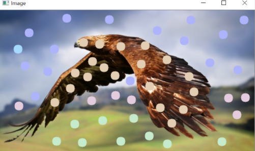
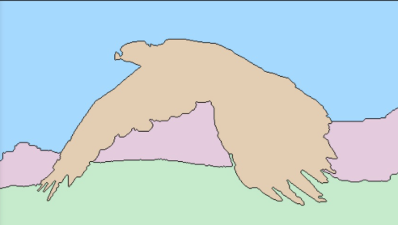
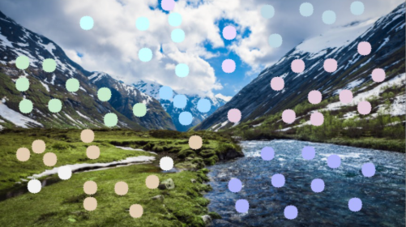
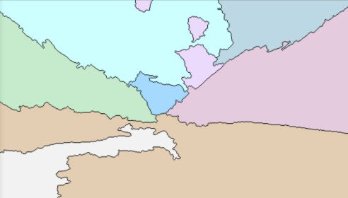
Semantic Mapping
Pixel-level spatial understanding for depth approximation and scene recreation.
Processing & Analytics
Super-Resolution Image Enhancement
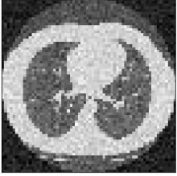
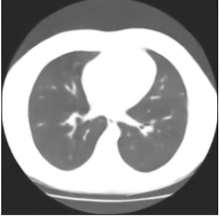
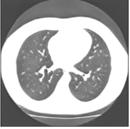
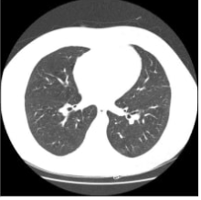
Detail Restoration
Generative upscaling networks to reconstruct high-fidelity imagery from degraded inputs.
Directional Optical Tracking
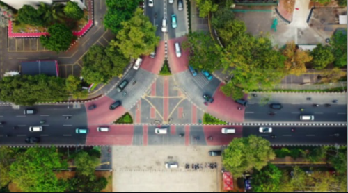
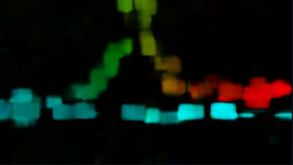
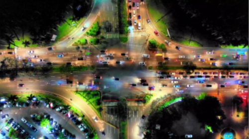
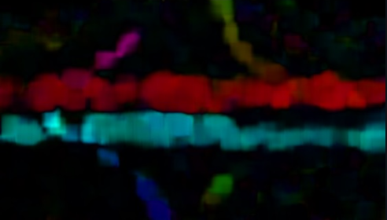
Motion Estimation
Calculating dense pixel displacements for video analysis and tracking systems.
Time Series Forecasting

Financial Modeling
Advanced recurrent architectures for predicting volatile market movements with quantifiable confidence.
Machine Learning Workflow
Time Series
Feature Engineering
Loss Functions
Backpropagation
Monitoring